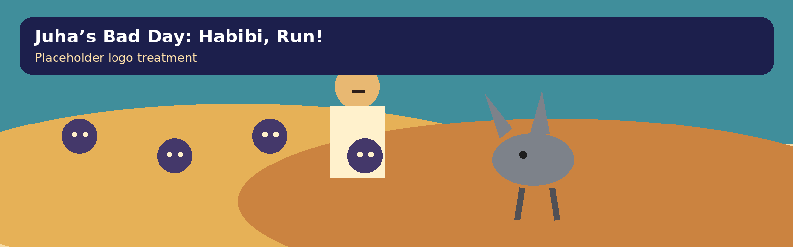
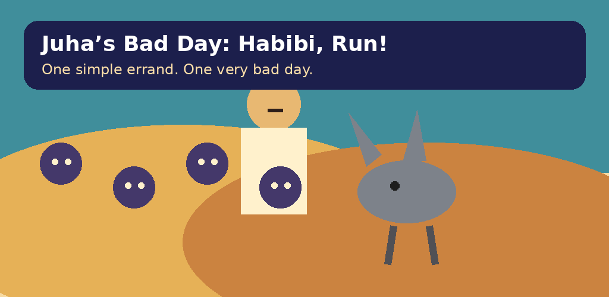

Media resources
Press Kit
Factsheet
- Title
- Juha’s Bad Day: Habibi, Run!
- One-sentence pitch
- One simple errand turns into a colorful survival adventure full of angry spirits, ridiculous upgrades, and one deeply unimpressed donkey.
- Developer
- One Apps
- Platform
- Android
- Engine
- Godot 4
- Genre
- Mobile survivors-like / casual action roguelite
- Status
- In development
- Package ID
com.oneapps.habibirun
Short description
A humorous mobile survivors-like inspired by Juha stories, Arabian folklore, desert adventures, clever-fool tales, jinn, ghouls, caravans, and oral storytelling traditions.
Full description
Juha begins with one simple errand. Everything goes wrong. Players guide him through escalating waves of playful supernatural trouble using touch movement and automatic combat, collecting experience and choosing upgrades along the way. Juha’s judgemental grey donkey is never far from the disaster. The project aims for a colorful, mysterious, comedic tone rooted in folklore without copying any existing protected character or visual identity.
URLs
Website: PLACEHOLDER until GitHub Pages is deployed
Privacy: privacy.html
Support: support.html
Assets


Contact placeholder: support@oneapps.example — replace before launch.